Alarme intrusion
Détecteurs, claviers, sirènes et commandes pour protéger chaque accès.
92 références →

Catalogue
Explorez 287 références illustrées. Chaque fiche propose « Demander un devis ». Installation sur toute l’île par Active Sécurité 974, partenaire agréé Ajax Systems.
Détecteurs, claviers, sirènes et commandes pour protéger chaque accès.
92 références →
Le cœur du système : centrales, kits de démarrage et prolongateurs de portée.
29 références →

Caméras IP, enregistreurs, sonnette et interphonie reliés à l’alarme.
59 références →
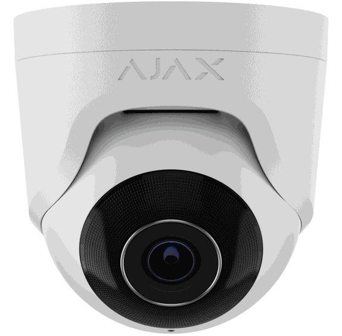
Ligne professionnelle Ajax EN54 : centrale, détecteurs, déclencheurs, sirènes, flashs et modules pour les bâtiments.
19 références →
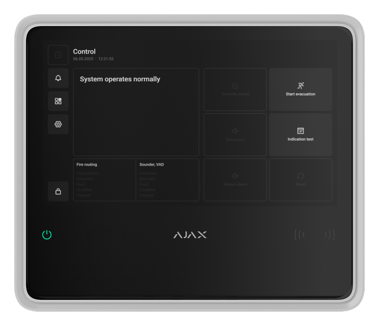
Éclairage, prises, relais, fuites d’eau et qualité de l’air dans la même application.
27 références →

Modules d’intégration, alimentations, boîtiers et accessoires de pose.
62 références →

Comment ça marche
Parcourez les univers et les fiches, filtrez par gamme, type ou coloris.
Ajoutez des produits à votre sélection devis, avec le coloris souhaité.
Nous établissons l’étude et le devis — intervention chez vous.
Toutes les références
287 références


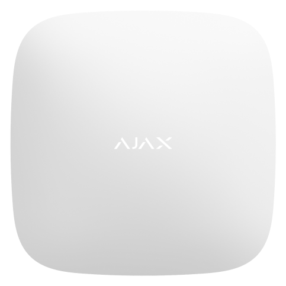

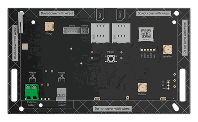


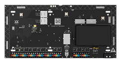


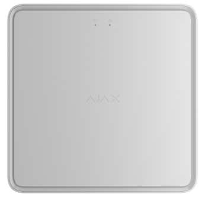


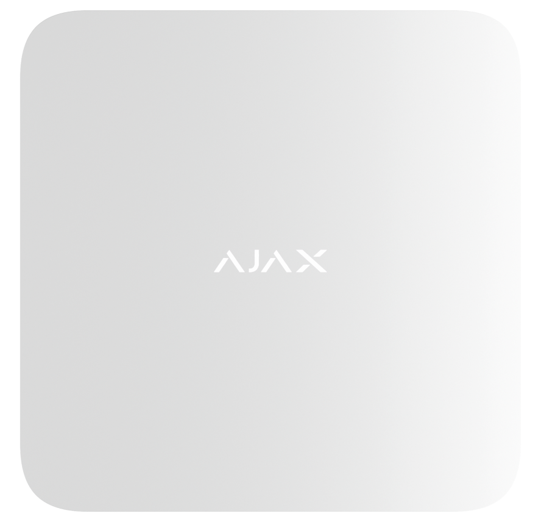

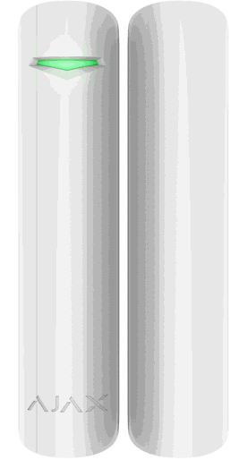


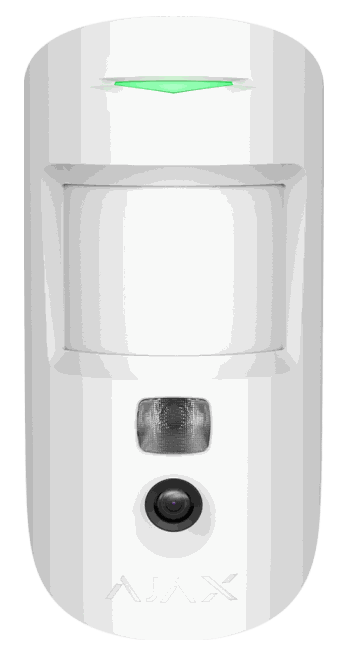




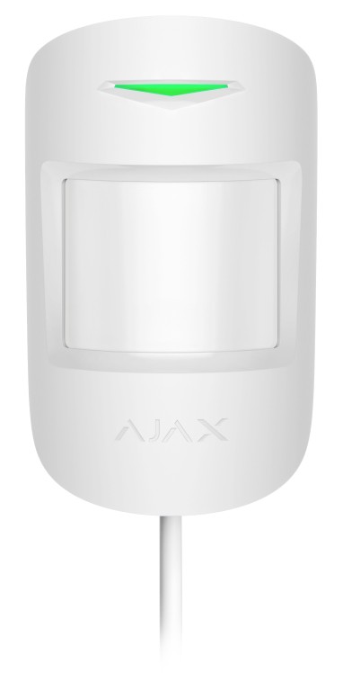
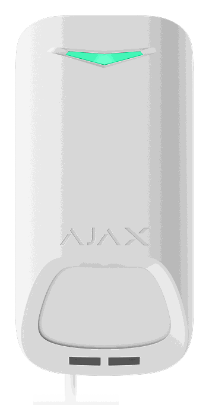


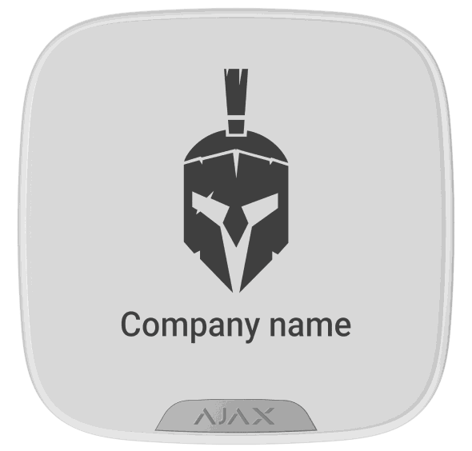


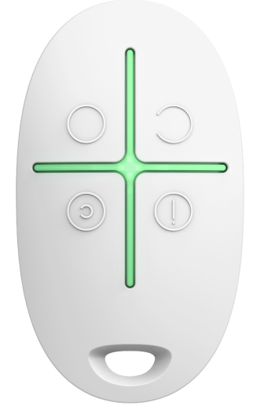

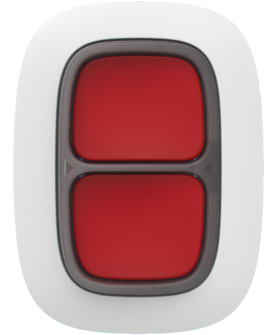


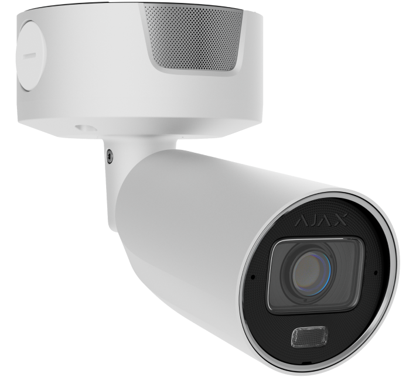


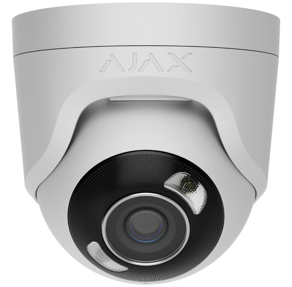


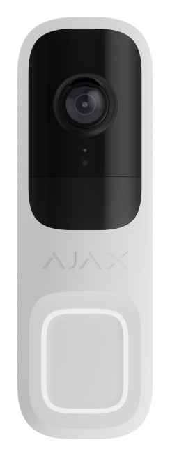


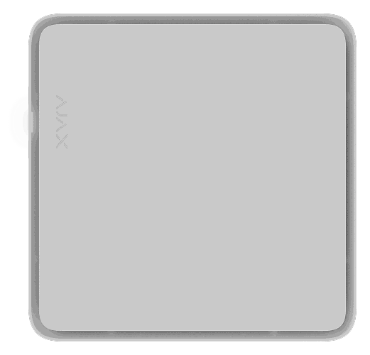


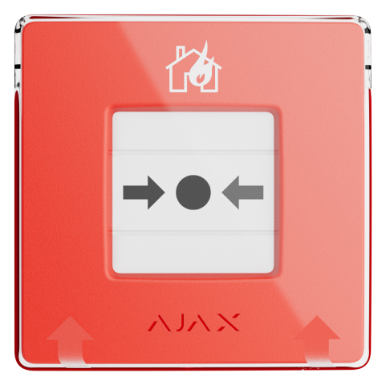


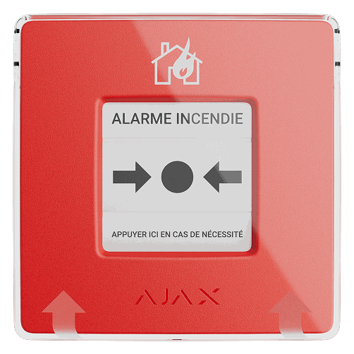
![LightSwitch (1-gang) [120] Jeweller](assets/img/p/c-ls-120-one-gang-white-4d1141c256-322.webp)

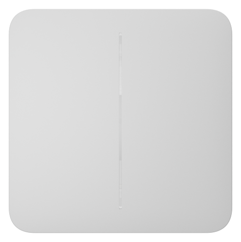

![LightSwitch (3-way) [120] Jeweller](assets/img/p/c-ls-120-three-way-white-c87472981d-322.webp)
![LightSwitch (4-way) [120] Jeweller](assets/img/p/c-ls-120-four-way-white-7483214a97-322.webp)


![Outlet (basic) [type E]](assets/img/p/c-out-basic-e-white-df27ad4d76-486.webp)
![Outlet (basic) [type F]](assets/img/p/c-out-basic-f-white-9395f91629-486.webp)

![Outlet [type E] Jeweller](assets/img/p/c-out-f-white-780f51ba99-486.webp)
![Outlet [type F] Jeweller](assets/img/p/c-out-f-white-aa6ed2780e-485.webp)
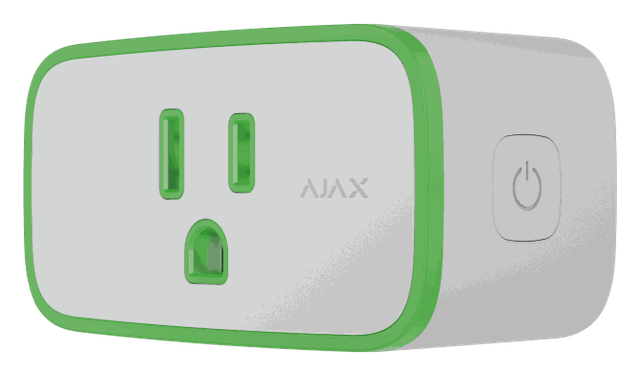
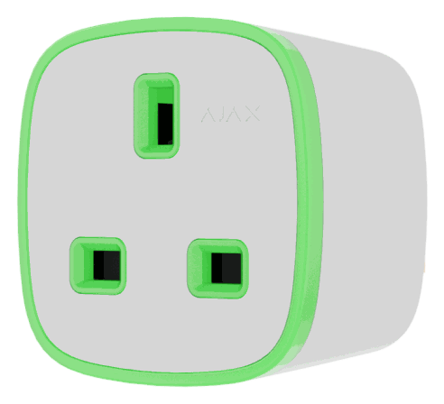


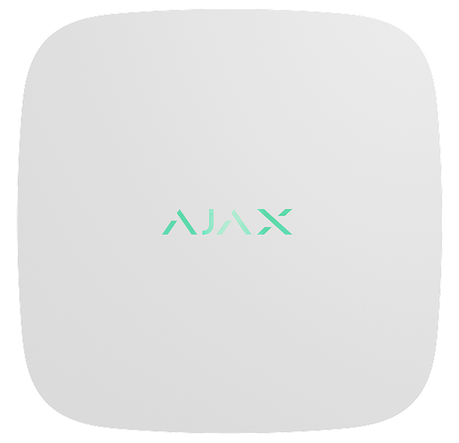

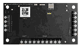


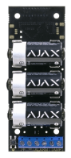


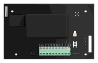
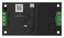
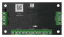


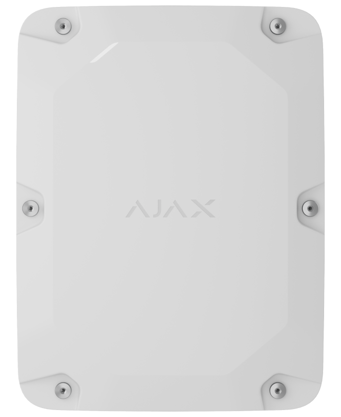

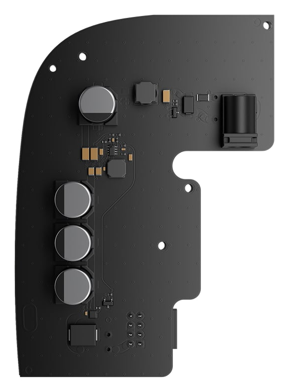


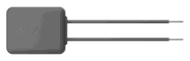

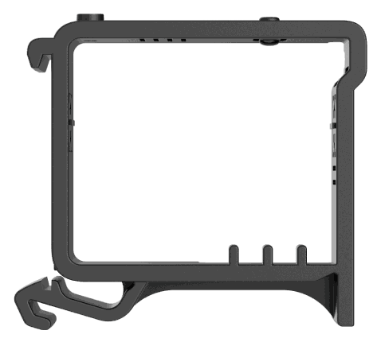

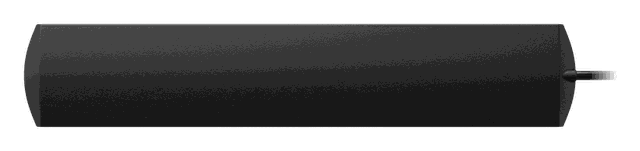


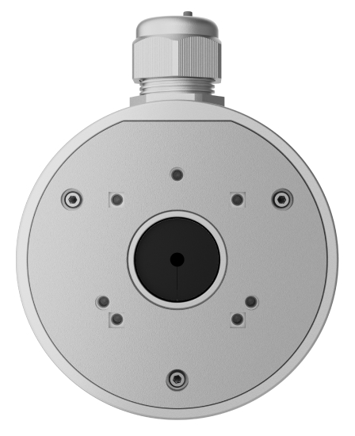


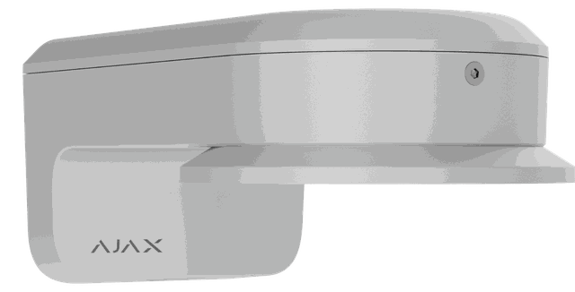

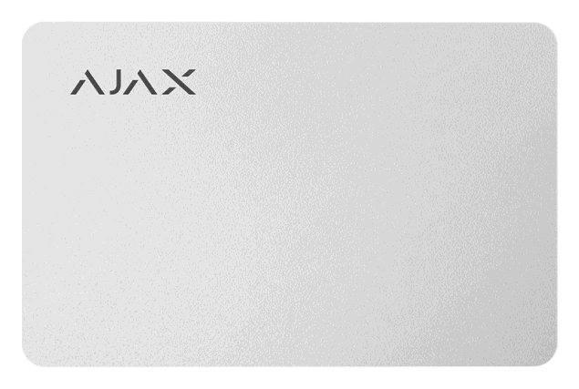

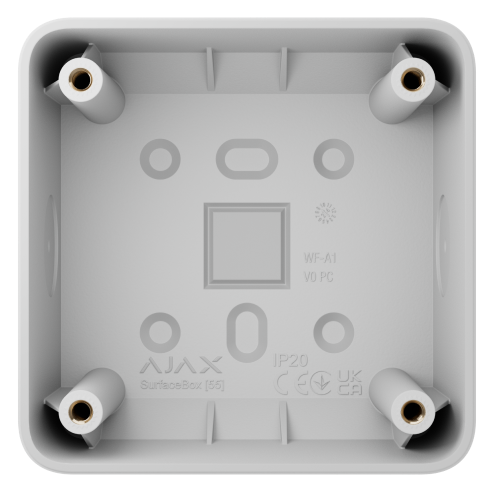


Aucune référence ne correspond à ces critères.
Étude et devis gratuits, chez vous, sur toute l’île.